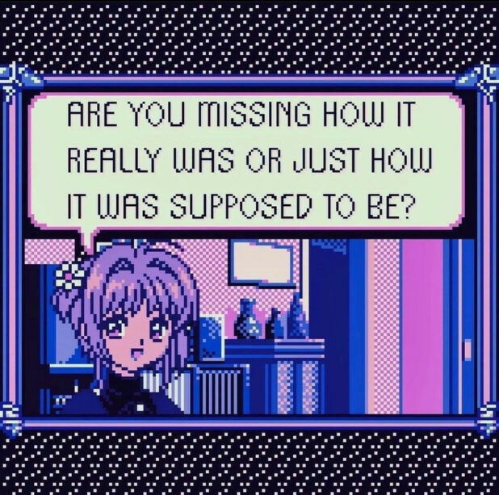

This will be a very anti-AI blogpost lol, if you're one of the AI fanatics you might as well leave the webpage right now. Ironically I will be starting college this year and my subjects are AI and ML. I'm not against the technology itself but rather against how it is being used and developed, in the following sections I will cover a plethora of concepts ranging from the infamous ChatGPT to the dead internet theory, so keep reading!
The AI disease
I call this widescale use of AI a disease for a reason. A disease is a condition which weakens your health and ultimately leads to death. This is what is happening in terms of AI usage, people are being overly dependant on AI for the smallest of needs, people are ready to pay as much as
500 USD a month (according to one reddit comment I read in the ChatGPT subreddit using stealth). Not to mention AI friends and partners that people are hooked up to and chat for hours, pay for premium versions and what not, it's getting eerily similar to the 1990s hit movie, The Matrix.
When AI was first envisioned, people thought it will come up with new ideas and algorithms to solve illnesses like cancer and end world hunger, bring world peace and fast forward the research in scientific fields. Now all we have are huge LLMs (Large Language Models) trained on data from sites like reddit, stack overflow that can intelligently answer your questions.
LLMs and image generations have caused more problems than give us actual solutions to our existing problems.
Fake images of celebrities doing inappropriate stuff, fake voices of people saying things, generative AI spamming the comments sections of content on YouTube, Twitter and Instagram. It only gets worse from here.
Worst of all is that this powerful tech is in the hands of a select few. I.e. governments, corporate giants and the rich. Opinions can be swayed, results of polls can be changed. [Wink wink, that's how Elon kept Twitter]. I sound like a pitchfork weilding leftist, but that is not the case. I'm on the side of the truth and the truth is covered in fog.
The truth is that AI needs to be open sourced and not a tool for the rich and the powerful to sway public opinion. The AI based tools however can be commercialised. There is no civilisation without an economy!!
The Dead Internet theory is an idea which basically tells us that the internet is made up of generative AI based bots that comment, share, like, dislike, interact in general with the content on the Internet.
This means every reddit comment you replied to, every instagram comment you liked, perhaps every twitter post you liked could NOT BE REAL. This infact can be seen in this subreddit.
You can read more as to what it does in this post, which is the only human generated post in the whole sub.
These comments and replies get eerily similar to human generated response, not to mention some generative models evening almost passing the Turing test. If a single sub can mimic human activity, ask yourself, why can't the whole internet?
Stop using propietary AI, Google services, social media like Facebook(Why does owning an Oculus VR headset require for me to signup on Facebook?Why does signing up on Facebook require my real name and phone number?), Instagram, Snapchat, etc. Unironically return to monke. The old internet provided uniqueness and a way for people to connect to each other and share content they made or enjoy online. The dawn of web2.0 has taken this away from us. Use decentralised platforms for sharing your media, whatever happens do not trust big tech. No, I'm not being paranoid. The threat to your sanity is real. Any engagement is good engagement. If there is no engagement, then the corporates will **make** engagement. Politicians who do not know how to check their e-mail are elected to make technology laws. This has to be a joke. The solution is to breakfree, take the "redpill" and know the truth. The truth is ugly but knowing it and acting upon it is only what will help us in this war against corporate greed and political corruption.


